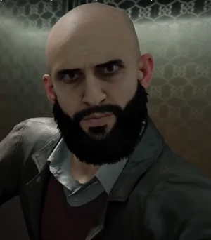
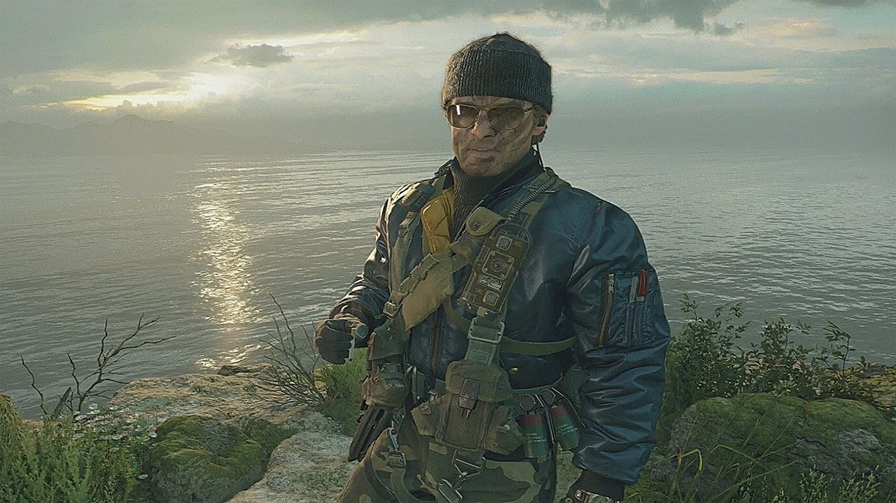

Личность человека под позывным "Персей", как и его прошлое, остаются засекреченными. Среди офицеров КГБ известно, что "Персей" с позволения партии работал автономно, без согласования действий со службой военной разведки.В поле зрения ЦРУ "Персей" впервые попадает в 1943 году, когда тайно проникает на секретный объект в Лос-Аламосе и похищает данные о проекте "Манхэттен". Тогда же удалось заснять его лицо (скорее всего, фото из поддельных документов для проникновения на базу), после чего он пропал из виду как для ЦРУ, так и для КГБ. Оперативный псевдоним "Персей" был присуждён агенту аналитиками из ЦРУ для его условного обозначения во время розыска.
Описан как "герой холодной войны", Имран Захаев был высокопоставленным сотрудником в МВД СССР и состоял в КГБ. Таким образом, Захаев имел доступ к туннелям, бункерным системам, а также к подземным казармам, убежищам и бункерам по всему Восточному блоку.Имран возлагал большие надежды и ценил образование, настаивая на том, чтобы его средний сын Виктор свободно владел итальянским, немецким, английским и французским языками. Виктор поступил в престижную подготовительную школу в Верданске, Кастовия, но вскоре был исключён из школы после ссоры с учителем за то, что тот схватил трость учителя и сломал её, чтобы избежать телесного наказания. В качестве наказания Имран отправил Виктора в Суворовское военное училище, где его сверстники были из более строгих семей советских военнослужащих.Введение новых экономических и культурных свобод в 80-е годы подорвало СССР как крупную мировую державу, к большому разочарованию Имрана. В какой-то момент Имран познакомился с Персеем, который сыграл большую роль в радикализации его политических убеждений.

Настоящее имя и прошлое человека, который далее будет известен как "Белл", неизвестно. Известно лишь то, что он был одним из доверенных агентов Персея и по его приказу работал над проектом "Красный свет" вместе с Арашем Кадиваром. Однако, Араш решил занять более высокое положение к предполагаемому моменту начала операции, поэтому попытался устранить агента как потенциального конкурента перед отправкой компонентов ретранслятора на остров Соловки. Мэйсон, Вудс и Адлер наблюдают за почти успешной гибелью агента от рук Араша, но после операции Адлер находит его, всё ещё живого, и эвакуирует в США.
Пленник подвергается не только лечению, но и нейро-лингвистическому программированию по проекту "МК-Ультра", в ходе которой его предыдущая личность стирается, а Адлер психологически прививает ему ложные воспоминания. Известно, что в проект по промывке мозгов протагонисту были вовлечены Парк и Лазарь. В этих "новых" воспоминаниях они вместе с Адлером и Симсом служили вместе ещё во времена войны во Вьетнаме и помешали Персею украсть атомную бомбу с местного гарнизона, и там же "Белл" (кодовое имя, присуждённое пленнику Адлером) впервые сталкивается с Персеем. Под видом воспоминаний о краже документации у советских сил во Вьетнаме, Адлер выведывает у Белла имя связного Персея — Антона Волкова.
Белл в составе группы Адлера участвует в операциях по территории Европы и СССР, расследуя возможные планы Персея, одновременно с этим находясь под наблюдением у Хадсона — тот опасается, что у Белла, как у бывшего советского агента, вернётся память, и тогда он будет представлять угрозу для всей операции, но Адлер защищает его как резервный источник информации против Персея.
